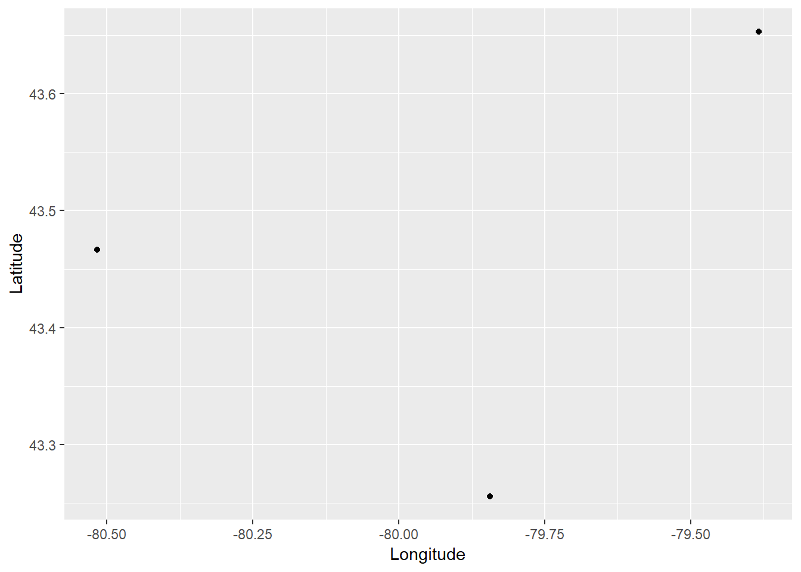

Chapter 1 Introduction
NOTE: This is an R Markdown Notebook. When you execute code within the notebook, the results appear beneath the code.
Now that you have installed R and RStudio we can begin with an overview of basic operations and data structures in this computing language. Please note that this document you are reading, called an R Notebook, is an example of what is called “literate programming”, a style of document that uses code to illustrate a discussion, as opposed to the traditional programming style that uses natural language to discuss/document the code. It flips around the usual technical writing approach to make it more intuitive and accessible.
Whenever you see a chunk of code as follows, you can run it (by clicking the ‘play’ icon on the top right corner) to see the results. Try it!
print("Hello, Geography 4GA3")## [1] "Hello, Geography 4GA3"The chunk of code above instructed R (and trough R the computer) to print (or display on the screen) some text.
1.1 Learning objectives
In this practice, you will learn:
- How to install R.
- Basic operations in R.
- Data classes, data types, and data transformations.
- About packages in R.
- Basic visualization.
1.2 RStudio Window
If you are reading this, you probably already read the document ‘00 Installation of R’. We can now proceed to discuss some basic concepts of operations and data types.
1.3 Some basic operations
R can perform many types of operations. Some simple operations are arithmetic. Other are logical. And so on.
For instance, R can be instructed to conduct sums, as follows:
2 + 2## [1] 4R can be instructed to do multiplications:
2 * 3## [1] 6And sequences of operations, using brackets to indicate their order. Compare the following two expressions:
2 * 3 + 5## [1] 112 * (3 + 5)## [1] 16Other operations produce logical results (values of true and false):
3 > 2## [1] TRUE3 < 2## [1] FALSEAnd of course, you can combine operations in an expression:
2 * 3 + 5 < 2 * (3 + 5)## [1] TRUEAs you can see, R can be used as a calculator, but it is much more powerful than that.
We can also create variables. You can think of a variable as a box with a name, whose contents can change. Variables are used to keep track of important stuff in your calculations, and to automate operations. To create a variable, a value is assigned to a name, using this notation <-. You can read this x <- 2 as “assign value of 2 to a variable called x”. For instance:
x <- 2
y <- 3
z <- 5Check your “Global Environment”, the tab where the contents of your “Workspace” are displayed for you. You can also simply type the name of the variable in the Console to see its contents. Now that we have some variables with values, we can express operations as follows (same as above)
x * y + z## [1] 11x * (y + z)## [1] 16However, if we wanted, we could change the values of any of x, y, and/or z and repeat the operations. This allows to automate some instructions:
x <- 4
x * y + z## [1] 171.4 Data Classes in R
R can work with different data classes, including:
- Numerical
- Character
- Logical
- Factor
This allows you to store information in different forms, which can be useful. For instance, you may want to save some text:
name <- "Hamilton"Or numerical information:
population <- 551751If you wish to check what class an object is, you can use the function class:
class(name)## [1] "character"class(population)## [1] "numeric"1.5 Data Types in R
R can work with different data types, including scalars (essentially matrices with only one element), vectors (matrices with one dimension of size 1) and matrices (more generally.
print('This is a scalar')## [1] "This is a scalar"1## [1] 1print('This is a vector')## [1] "This is a vector"c(1,2,3,4)## [1] 1 2 3 4print('This is a matrix')## [1] "This is a matrix"matrix(c(1,2,3,4),nrow = 2, ncol=2)## [,1] [,2]
## [1,] 1 3
## [2,] 2 4The command c() is used to concatenate the arguments. The command matrix() creates a matrix with the specified number of rows and columns.
An important data type in R is a data frame. A data frame is a table consisting of rows and columns - commonly a set of vectors that have been collected for convenience. A data frame is used to store data in digital format. (If you have used Excel or another spreadsheet software before, data frames will be familiar to you: they look a lot like a sheet in a spreadsheet.)
A data frame can accommodate large amounts of information (several billion individual items). The data can be numeric, character, logical, and so on. Each grid cell in a data frame has an address that can be identified based on the row and column it belongs to. R can use these addresses to perform mathematical operations. R labels columns alphabetically and rows numerically (or less commonly alphabetically).
To illustrate a data frame, let us first create the following vectors, that include names, populations, average salaries, and coordinates of some cities:
Name <- c('Hamilton','Waterloo','Toronto')
Population <- c(551751, 219153, 2731571)
AvgSalary <- c(45692, 57625, 48920)
Latitude <- c(43.255203, 43.4668, 43.6532)
Longitude <- c(-79.843826, -80.51639, -79.3832)Again, note that <- is an assignment. In other words, it assigns the item on the right to the name on the left.
After you execute the chunk of code above, you will notice that new values appear in your Environment. These are five vectors of size 1:3, one that is composed of alphanumeric information (or chr, for ‘character’) and four columns that are numeric (num).
These vectors can be collected in a dataframe. This is done for convenience, so we know that all these data belong together in some way. Please note that to create a data frame, the vectors must have the same length. In other words, you cannot create a table with elements that have different numbers of rows (other data types allow you to do this, but not data frames).
We will now create a data frame. We will call it “Cities”. There are rules for names, but in most cases it helps if the names are intuitive and easy to remember. The function used to create a data frame is data.frame() and the arguments are the vectors that we wish to collect there.
Cities <- data.frame(Name, Population, AvgSalary, Latitude, Longitude)After running the chunk above, now you have a new object in your environment, namely a data frame called Cities.
If you double clic on Cities in the Environment tab, you will see that this data frame has five columns (labeled Name, Population, AvgSalary, Latitude, and Longitude), and three rows. You can enter data into a data frame and then use the many built-in functions of R to perform various types of analysis.
Please note that Name, which was an alphanumeric vector, was converted to a factor in the data frame. A factor is a way to store nominal variables that may have two or more levels. In the present case, the factor variable has three levels, corresponding to three cities. If we had information for multiple years, each city might appear more than once, for each year that information was available.
1.6 Indexing and Data Transformations
Data frames store information that is related in a compact way.
To perform operations effectively, it is useful to understand the way R locates information in a data frame. As noted before, each grid cell has an address, or in other words an index, that can be referenced in several convenient ways. For instance, assume that you wish to reference the first value of the data frame, in other words, row 1 of column Name. To do this, you would go use the following instruction:
Cities[1,1]## [1] Hamilton
## Levels: Hamilton Toronto WaterlooThis will recall the element in the first row and first column of Cities.
As an alternative, you could type:
Cities$Name[1]## [1] Hamilton
## Levels: Hamilton Toronto WaterlooAs you see, this has the same effect. The string sign $ is used to reference columns in a data frame. Therefore, R will call the first element of Name in data frame Cities.
Cities[1,2] is identical to Cities$Name[2]. Try changing the code in the chunk and executing. If you type Cities$Name, R will recall the full column.
Indexing is useful to conduct operations. Suppose for instance, that you wished to calculate the total population of two cities, say Hamilton and Waterloo. You can execute the following instructions:
Cities$Population[1] + Cities$Population[2]## [1] 770904(More involved indexing is also possible, for example, if we use logical operators. Do not worry too much about the details, but you can verify that the results are identical)
Cities$Population[Cities$Name=='Hamilton'] + Cities$Population[Cities$Name=='Waterloo']## [1] 770904Suppose that you wanted to calculate the total population of the cities in your data frame. To do this, you would use the instruction sum:
sum(Cities$Population)## [1] 3502475You have already seen how it allows you to store in memory the results of some instruction, by means of an assignment <-. You can also perform many other useful operations. For instance, calculate the maximum value for a set of values:
max(Cities$Population)## [1] 2731571And, if you wanted to find which city is the one with the largest population, you would use a logical statement as an index:
Cities$Name[Cities$Population==max(Cities$Population)]## [1] Toronto
## Levels: Hamilton Toronto WaterlooAs you see, Toronto is the largest city (by population) in this dataset. Using indexing in imaginative ways provides a way to do fairly sophisticated data analysis.
Likewise, the function for finding the minimum value for a set of values is min:
min(Cities$Population)## [1] 219153Try calculating the average of the population of the cities, using the command mean. Use the empty chunk below for this (the result should be 1167492):
Finding the maximum and minimum, aggregating (calculating the sum of a series of values), and finding the average are examples of transformations applied to the data. They give insights into aspects of the dataset that are not evident from the raw data.
1.7 Visualization
The data frame, in essence a table, informative as it is, may not be the best way to learn from the data. Visualization is often a valuable complement to data analysis. Say, we might be interested in finding which city has the largest population and which city has the smallest population. We could achieve this by using similar instructions as before, for example:
paste('The city with the largest population is',Cities$Name[Cities$Population==max(Cities$Population)])## [1] "The city with the largest population is Toronto"paste('The city with the smallest population is', Cities$Name[Cities$Population==min(Cities$Population)])## [1] "The city with the smallest population is Waterloo"(Note that paste is similar to print, except that it converts everything to characters before printing. We use this command because the contents of Name in data frame Cities are not characters, but levels.)
A more convenient way of understanding these data is by visualizing them, using for instance a bar chart.
We will proceed to create a bar chart, using a package called ggplot2. This package implements a grammar of graphics, and is a very flexible way of creating plots in R. Since ggplot2 is a package, we first must ensure that it is installed. You can install it using the command install as follows:
install.packages("ggplot2")As an alternative, you can use the Packages tab in RStudio. Simply navigate to the tab, click install, and select ggplot2 from there. Note that you need to install the package only once! Essentially install adds it to your library of packages, where it will remain available.
Once the package is installed, it becomes available, but to use it you must load it in memory. For this, we use the command library(), which is used to load a package, that is, to activate it for use.
Assuming that you already have installed ggplot2, we proceed to load it:
library(ggplot2)Now all commands from the ggplot2 package are available to you.
This package works by layering a series of objects, beginning with a blank plot, to which we can add things. The command to create a plot is ggplot(). This command accepts different arguments. For instance, we can pass data to it in the form of a data frame. We can also indicate different aesthetic values, that is, the things that we wish to plot. None of this is plotted, though, until we indicate which kind of geom or geometric object we wish to plot.
For a bar chart, we would use the following instructions:
ggplot(data = Cities, aes(x = Name, y = Population)) + geom_bar(stat = 'identity')
Let us break down these instructions. We are asking ggplot2 to create a plot that will use the data frame Cities. Furthermore, we tell it to use the values of Names in the x-axis, and the values of Population in the y-axis. Run the following chunk:
ggplot(data = Cities, aes(x = Name, y = Population))
Notice how ggplot2 creates a blank plot, but it has yet to actually render any of the population information in there. We layer elements on a plot by using the + sign. It is only when we tell the package to add some geometric element that it renders something on the plot. In the previous case, we told ggplot2 to draw bars (by using the geom_bar command). The argument of geom_bar was stat = 'identity', to indicate that the data for the y-axis was to be used ‘as-is’ without further statistical transformations.
There are many different geoms that can be used in ggplot2. You can always consult the help/tutorial files by typing ??ggplot2 in the console. See:
??ggplot21.8 Creating a simple map
We will see how maps are used in spatial statistical analysis. The simplest one that can be created is a so-called dot map that displays the location of an event of interest. A dot map is, in fact, simply a scatterplot of the coordinates of events. We can use ggplot2 to create a simple dot map of the cities in your simple dataset. For this, we create a ggplot object, and for the x and y aesthetics we use the coordinates. The geometric element that we want to render is a point:
ggplot(data = Cities, aes(x = Longitude, y = Latitude)) + geom_point()
This is a simple dot map that simply shows the locations of the cities. We can add labels by means of the geometric element text:
ggplot(data = Cities, aes(x = Longitude, y = Latitude)) + geom_point() + geom_text(aes(label = Name))
A proportional symbol map changes the size of the symbols to add information to the plot. To create a proportional symbol map, we add to the aesthetics the instruction to use some variable for the size of the symbols:
ggplot(data = Cities, aes(x = Longitude, y = Latitude)) + geom_point(aes(size = Population)) + geom_text(aes(label = Name))
And fix the position of the labels by adding a vertical justification to the text (vjust) and expanding the limits of the plot (expand_limits):
ggplot(data = Cities, aes(x = Longitude, y = Latitude)) + geom_point(aes(size = Population)) + geom_text(aes(label = Name), vjust = 2) + expand_limits(x = c(-80.7, -79.2), y = c(43.2, 43.7))
You have now created a relatively simple proportional symbols map! You can see that creating a plot is simply a matter of instructing R (through ggplot2) to complete a series of instructions:
Create a
ggplot2object using a dataset, which will render stuff at locations given by variable1 and variable 2:ggplot(data = dataset, aes(x = variable1, y = variable2))Add stuff to the plot. For instance, to add points use
geom_point, to add lines usegeom_line, and so on.
Check the ggplot2 Cheat Sheet for more information on how to use this package.
A last note. Many other visualization alternatives (for instance, Excel) provide point-and-click functions for creating plots. In contrast, ggplot2 in R requires that the plot be created by meticulously instructing the package what to do. While this is more laborious, it also means that you have complete control over the creation of plots, which in turn allows you to create more flexible and inventive visuals.
This concludes your basic overview of basic operations and data structures in R. You will have an opportunity to learn more about creating maps in R with your reading.